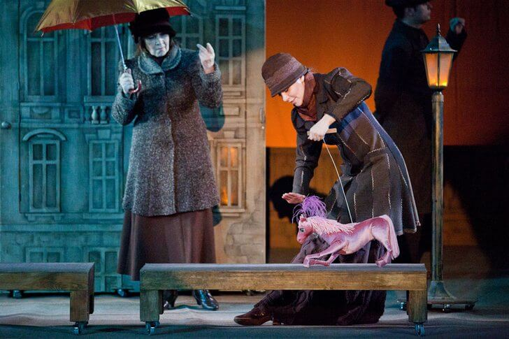

История театра кукол началась в 1925 году с любительской университетской постановки, в которой были задействованы молодые артисты. Очень скоро выступления перешли на профессиональную платформу, и сцена обрела популярность среди зрителей. Репертуар театра составлен из произведений для взрослых и детей. Здесь ставят пьесы Н. В. Гоголя, М. де Сервантеса, У. Шекспира, А. П. Чехова, Р. Киплинга и других известных авторов.
